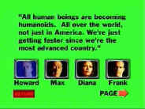

Network/A,B+ |
MGM/1976/121m
|
Scathing satire from
a master director at the peak of his powers. Network skewers the new corporate
television mentality of mediocrity without integrity.
At a floundering national network, the news ratings have been
precipitously. Veteran anchor Howard Beale is about to be terminated from his prestigious
place at the head of the news desk. Max Schumacher, head of news for the network, must
glad hand his friend the bad news. Both men have seen the glory days of television news,
coming up from the ranks of journalism pioneered by the Ed Murrow's of the industry.
Howard is burst out. Max is scorched around the edges from battling against the new
corporate powers.

|
The Network Quiz DVD
menu.©Live |
Enter
Diana, an ambitious programmer from the new generation of commercial vultures. She bright,
beautiful, and she captures Max Schumacher's heart. Meanwhile Howard Beale gets to go on
the air for his last show and goes bezonkers, ranting against the frustrations of society.
Before they can permanently dislodge Beale from the news show, he captures the imagination
of the public with his new signature slogan "I'm mad as hell and I'm not going to
take it anymore," and the network quickly adapts to public sentiment, leaving Beale on
the air to rant. Behind the scenes corporate hot shot Frank Hackett battles for control of
the network and Max Schumacher flounders. Lumet puts it together with amazing dexterity
working from a brilliant script from Paddy Chayefsky.
William Holden, Faye Dunaway and Peter Finch are Max,
Diana, and Howard, with Robert Duvall in the pivotal role of Frank. Finch and Dunaway won
the Best Acting Oscars©, but Holden, nominated, gives a mature, thoughtfully subtle
performance and is the performance of 1976.
Another anamorphic DVD presentation from MGM of a classic film
that looks quite good. Director Lumet is not known as a visual stylist and Network,
while workmanlike visually, doesn't make the greatest looking DVD in the world. You can be
sure that this is by far the best Network has looked since it's first print were
delivered wet to theaters in its explosive debut run. The image is always sharp and
there is little element marking. Color is accurate. There is a bonus interactive quiz game
included and the packaging provides a informative production booklet.
|
The
Feature
Archive has articles ranging from A
Western is a Western is a Western to Screen
Voices, The
Heistmasters, Akira
Kurosawa, film preservationist Robert
Harris and Shawshank Redemption director Frank
Darabont.

Catch the Hollywood take on Blonde Bimbos by clicking on the
image above.
Check out the Movie
Poster Archive for
short bios and images of Susan Hayward, Kirk Douglas, Katharine
Hepburn and many more. This month's featured star is Clark
Gable.

More
than just talk, one of the friendly and helpful places on the
web where home theater views are exchanged. You might find a
laugh or two as well.
Imaging
Science Foundation
The Imaging Science
Foundation promotes proper standards in home theater viewing.
ISF trained technicians offer monitor calibration services to
consumers. The difference in a properly calibrated monitor
can be astounding. Click on the image to find an ISF member near
you.
HOT
LINKS
DVD
Verdict
They may be
judgmental, but that's the point, isn't it. Lots of DVD reviews
plus news and more
The
Home Theater Forum
Looking for lively and
helpful exchanges on home theater, DVD, movies. Visit this
friendly site and get a hardy welcome.
Home Theater
Reference Reviewing System

When you read a DVD review it's of utmost importance to know
what equipment is being used to evaluate quality. Click on the
projectors to find out more.
|